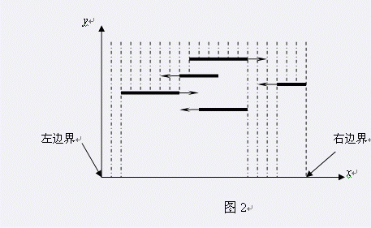

第一行有四个整数N，W，T，V。N表示自动伞的数目，W表示马路的宽度，T表示需要统计从开始下雨到多长时间后的降雨情况，V表示单位面积单位时间内的降雨体积。 为了描述方便，我们画出了一个如图2所示的天空中五把伞的剖面图，取马路左边界为原点，取向右为x轴正方向，取向上为y轴正方向，建立平面直角坐标系。这样，每把自动伞都可以看作平面上的一条线段。  图2 接下来的N行，每行用三个整数描述一把自动伞。第一个数x是伞的初始位置，用它左端点的横坐标表示。第二个数l是伞的长度，即x方向上的尺寸。第三个数v是伞的速度，v的大小表示移动的速率。如果v>0，表示开始时伞向右移动；如果v<0，表示开始时伞向左移动；如果v=0，表示伞不动。